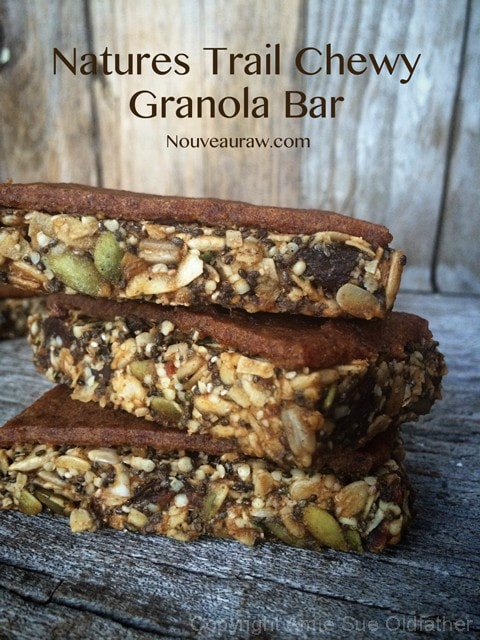
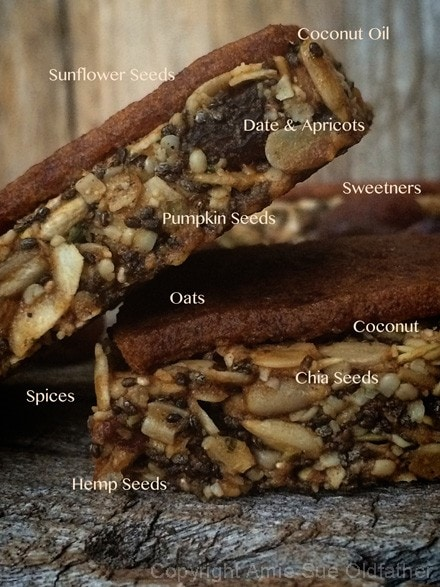
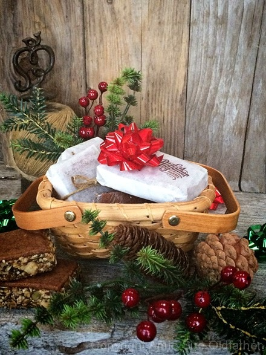
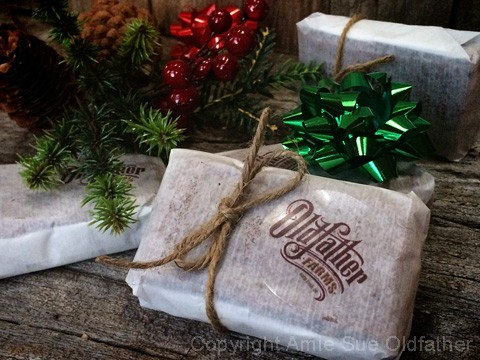

Nature’s Trail Chewy Granola Bar

~ raw, vegan, gluten-free, nut-free ~
The ingredient list might appear long for this recipe… ok, maybe it is. BUT I assure you, it goes together fairly quickly after you do the prep work of soaking and dehydrating.
When the time comes to create the bar shapes, the batter will seem loose. Even I was a little concerned at first that I was going to end up with granola rather than bars (not that there is anything wrong with that).
I used my sushi press, which is my go-to-bar-press these days. I love it! A small investment for a big payoff. What’s the payoff, you might ask? Well, it makes my life easier, and I find it fun, so it is well worth the price of admission. :)
Once dehydrated, the bar is firm and chewy with bits of crunch. The top layer is date paste that I piped out on top. It dehydrated nice and firm, not tacky to the touch. For storing purposes, I recommend wrapping each one individually with plastic wrap or wax paper.
You could lay them side by side in a large container and even stack them, but only if you slide a piece of wax paper in between the layers. Over time, the date paste might stick to the one stacked on top if you don’t, take this step
Need a little extra giddy-up in your step throughout the day? These bars might help you. Let’s start with the seeds… All of the varieties used here are going to pack a powerhouse of energy. They will provide your body with a healthy source of fat, protein, and fiber. Each seed also contains a robust set of phytonutrients and antioxidants. Next, come the oats! Oats are always a great filler for a granola bar. They are a great source of carbohydrates and fiber.
To add a little sweetness and chew, I used dried fruit. Dried fruits are an excellent way to add some natural, whole food, sugars into the mix without going overboard.
Lastly, every bit of goodness needs a side-kick of Superfoods! Chia and hemp seeds will give you a super boost of antioxidants and vitamins, helping to ensure a long-lasting energy supply to get you through the day.
yields 20 bars (1/4 cup each)
- 1 cup raw sunflower seeds, soaked & dehydrated
- 1 cup rolled, gluten-free oats, soaked & dehydrated
- 1 1/2 cups raw pumpkin seeds, soaked & dehydrated
- 1/2 cup chia seeds
- 1/2 cup hemp seeds
- 1/2 cup shredded coconut
- 1/4 cup raw coconut crystals
- 1 tsp ground cinnamon
- 1/2 tsp ground nutmeg
- 1/2 tsp ground allspice
- 1/2 tsp Himalayan pink salt
- 1/2 cup water
- 1/4 cup cold-pressed coconut oil
- 1/4 cup raw honey or raw coconut nectar for vegan
- 1/2 cup diced Medjool dates, pitted
- 1/2 cup diced, dried apricots
Topping:
Preparation:
- I recommend that you don’t skip soaking & dehydrating the pumpkin and sunflower seeds, and oats to ensure that the batter doesn’t get too wet.
- In a large mixing bowl, combine the sunflower seeds, oats, pumpkin seeds, chia seeds, hemp seeds, coconut, raw coconut crystals, cinnamon, nutmeg, allspice, and salt. Mix well, so the spices are evenly dispersed.
- Add the water, coconut oil, raw honey, dates, and apricots. With your hands, work everything together, getting everything well coated.
- To create the bars; I used a press which worked beautifully. If you don’t have a press, line a baking sheet with plastic wrap, making sure to bring it up over the edges. Press the batter into the pan with the palm of your hands. Press down as firm and evenly as you can. Place in the freezer for a few hours. Remove, lift out onto a cutting board, and slice into bar-sized shapes.
- Place the bars on the mesh sheet that comes with the dehydrator. I used a knife to slide under each bar to transport it to the mesh sheet.
- Pipe the date paste onto each bar. I used a Wilton piping tip #789 and a large piping bag to accommodate it. This pipe tip size matched perfectly with the width of the bar press that I used. You can use a butter knife if you don’t have these tools. Just do your best and have fun with it.
- Dehydrate at 145 degrees (F) for 1 hour, then reduce to 115 degrees (F) and dry for about 24 hours or until dry to the touch on the outside but a bit moist on the inside.
- Allow the bars to cool to room temp before storing them. Wrap individually. On the countertop, they should last 1-2 weeks, in the fridge 2-4 weeks, and in the freezer, up to 3 months, possibly longer!
The Institute of Culinary Ingredients™
- Raw honey isn’t vegan, but I still use it now and again. Read (here) why I like to.
- Learn about the wonderful characteristics of Raw Coconut Nectar (here).
- Dates are a fantastic ingredient for raw food recipes, click (here) to read why.
- What is Himalayan pink salt, and does it matter? Click (here) to read more about it.
- Is coconut butter the same as coconut oil? Click (here) to find out.
- Are oats gluten-free? Yes, read more about that (here).
- Are oats raw? Yep! Click (here) to learn more.
- Do I need to soak and dehydrate oats? It’s Not required but recommended. Click (here) to see why.
Culinary Explanations:
- Why do I start the dehydrator at 145 degrees (F)? Click (here) to learn the reason behind this.
- When working with fresh ingredients, it is essential to taste test as you build a recipe. Learn why (here).
- Don’t own a dehydrator? Learn how to use your oven (here). I do, however honestly believe that it is a worthwhile investment. Click (here) to learn what I use.



© AmieSue.com